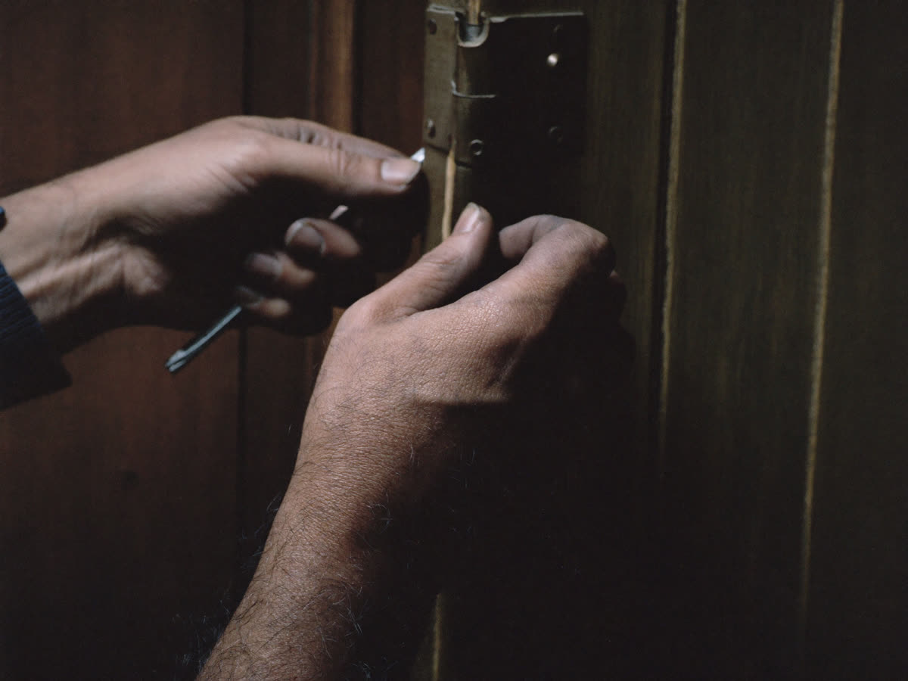
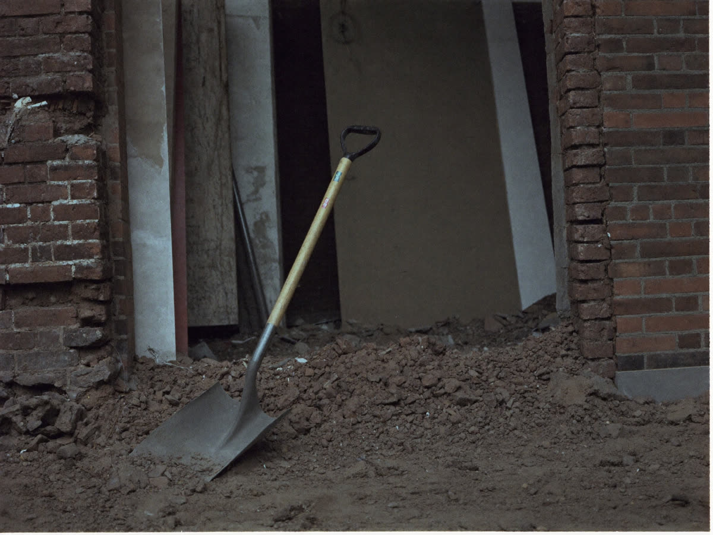
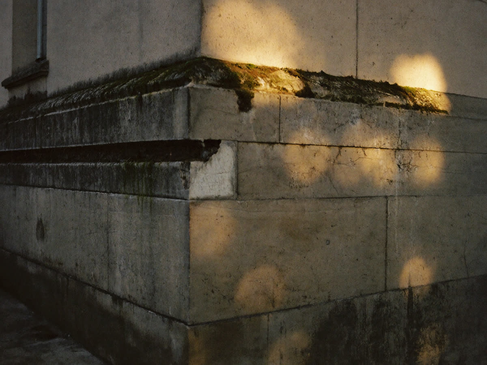

Brauche ich für SEO eine neue Website?
Die Frage kommt fast immer, und die Antwort ist seltener ja, als Agenturen behaupten.
Ein Neubau ist der größte Posten, den eine Agentur verkaufen kann. Entsprechend oft wird er empfohlen, und entsprechend selten ist er tatsächlich nötig. In den meisten Fällen, die wir sehen, lässt sich mit der vorhandenen Seite arbeiten, und das Geld ist in Inhalten und Technik deutlich besser angelegt als in einem neuen Design.
Es gibt aber Fälle, in denen ein Neubau der günstigere Weg ist, und die lassen sich klar benennen. Dieser Beitrag beschreibt beides: was sich auf einer bestehenden Seite ohne Umbau erreichen lässt, woran man erkennt, dass die Grenze erreicht ist, und welcher Fehler bei einem Neubau am teuersten ist.

Was auf der alten Seite geht
Der überwiegende Teil der Arbeit an einer Website hat mit dem Design nichts zu tun. Titel und Beschreibungen ändern, Überschriften in eine sinnvolle Ordnung bringen, für jede Leistung eine eigene Unterseite anlegen, interne Verweise setzen, Bilder auf eine vernünftige Größe bringen, Alt-Texte ergänzen, das Google-Unternehmensprofil pflegen. All das geht auf fast jedem System, auch auf einem zehn Jahre alten.
Das ist keine Notlösung, sondern die Reihenfolge, in der Suchmaschinenoptimierung ohnehin abläuft. Eine neue Seite ohne diese Arbeit rankt genauso schlecht wie die alte, nur schöner. Umgekehrt bringt diese Arbeit auf einer unscheinbaren Seite oft innerhalb weniger Monate Bewegung, weil sie die Fragen beantwortet, die Google an eine Seite stellt, und das sind andere als die Fragen, die ein Besucher an das Aussehen stellt.
Praktisch heißt das: Bevor überhaupt über einen Neubau gesprochen wird, sollte feststehen, welche Ihrer Seiten im Index stehen, für welche Begriffe sie heute gefunden werden und welche Begriffe gar keine eigene Seite haben. Warum eine Seite trotz guter Arbeit unsichtbar bleiben kann, steht im Beitrag Warum findet mich bei Google niemand?
Ein Beispiel aus der Praxis, das fast immer funktioniert: Eine Seite hat eine Seite "Leistungen", auf der alle acht Leistungen des Betriebs untereinander stehen. Aus dieser einen Seite werden acht eigene Seiten, jede mit eigenem Titel, eigener Überschrift und einem Text, der eine Leistung vollständig beschreibt. An der Technik ändert sich nichts, am Design ändert sich nichts, und die Zahl der Suchbegriffe, für die der Betrieb überhaupt in Frage kommt, vervielfacht sich.
Woran Baukästen scheitern
Es gibt Systeme, bei denen die Arbeit aus dem vorigen Abschnitt nicht möglich ist, und das sind die Fälle, in denen ein Wechsel tatsächlich Sinn ergibt. Das häufigste Hindernis: Das System lässt pro Unterseite keinen eigenen Titel zu, sondern setzt überall denselben. Google zeigt den Titel in den Ergebnissen an und nutzt ihn als Signal, welche Seite zu welcher Suche passt. Sind alle gleich, konkurrieren Ihre eigenen Seiten gegeneinander.
Zweites Hindernis: keine saubere Überschriftenstruktur. Manche Baukästen vergeben Überschriftenebenen automatisch nach Position im Layout, nicht nach Bedeutung. Dann steht die Telefonnummer in der ersten Ebene und das Thema der Seite in der vierten. Das lässt sich von außen nicht korrigieren.
Drittes Hindernis: keine eigenen Adressen für neue Seiten, oder Adressen, die sich bei jeder Änderung mitändern. Wenn Sie nicht dauerhaft festlegen können, unter welcher Adresse eine Unterseite erreichbar ist, können Sie auch nichts aufbauen, was Bestand hat. Ob Ihr System diese drei Dinge zulässt, lässt sich in einer halben Stunde prüfen, und genau das ist Teil eines SEO Audits.

Wann ein Neubau günstiger ist
Neben den technischen Grenzen gibt es drei Situationen, in denen wir selbst zu einem Neubau raten. Erstens: Die Seite ist auf dem Handy unbrauchbar und lässt sich nicht nachrüsten. Der größere Teil aller Suchen findet mobil statt. Eine Seite, auf der man am Telefon zoomen und schieben muss, um eine Telefonnummer zu finden, verliert Besucher unabhängig von ihrer Position.
Zweitens: Die Ladezeit ist baulich bedingt. Das betrifft Seiten, die im Kern aus eingebetteten Fremdinhalten bestehen, oder solche, bei denen jedes Bild in Originalgröße ausgeliefert wird und das System keine Möglichkeit bietet, das zu ändern. Hier wird jede Optimierung von der Bauweise aufgefressen.
Drittens: Niemand kann die Seite mehr pflegen. Eine selbst programmierte Seite, deren Entwickler nicht mehr erreichbar ist, ist in der Praxis eingefroren. Sie können keine Leistung ergänzen, keinen Text korrigieren, keine neue Seite anlegen. Dann ist der Neubau nicht Suchmaschinenoptimierung, sondern die Voraussetzung dafür, überhaupt wieder arbeiten zu können. Was so ein Projekt kostet und welche Abrechnungsmodelle üblich sind, steht im Beitrag Was kostet SEO?
Allen drei Fällen ist gemeinsam, dass die Begründung technisch ist und nicht ästhetisch. "Die Seite sieht veraltet aus" ist ein nachvollziehbarer Wunsch, aber kein Grund aus Sicht der Suche. Google bewertet nicht, ob ein Layout modern wirkt. Wenn Sie ohnehin ein neues Design wollen, ist das völlig in Ordnung, nur sollte es dann als eigene Entscheidung behandelt und nicht als Suchmaschinenoptimierung verkauft werden.

Der teuerste Fehler beim Neubau
Alte Adressen ersatzlos abschalten. Das passiert bei fast jedem Neubau, der ohne Rücksicht auf die Suche geplant wird, und es ist der teuerste Fehler überhaupt. Jede Unterseite, die vorher gefunden wurde, verliert ihre Position. Besucher, die über Google kommen, landen auf einer Fehlerseite. Verweise von anderen Seiten, die über Jahre entstanden sind, führen ins Leere und zählen nicht mehr.
Der Rückgang zeigt sich nicht sofort, sondern über zwei bis drei Monate, und wird dann gern dem neuen Design oder der Jahreszeit zugeschrieben. In Wahrheit hat die Seite ihre gesamte Vorgeschichte verloren, und die lässt sich nicht nachkaufen, sondern nur neu aufbauen.
Zu vermeiden ist das mit einem einzigen Arbeitsschritt, der vor dem Umschalten stattfinden muss: eine vollständige Liste aller alten Adressen, und für jede eine dauerhafte Weiterleitung auf das inhaltlich passende neue Ziel. Nicht pauschal auf die Startseite, denn das wertet Google wie eine Fehlerseite. Wer diese Liste nicht hat, soll nicht umschalten, auch wenn die neue Seite fertig ist.
Die Liste bekommen Sie aus zwei Quellen zusammen: aus der Search Console, die Ihnen zeigt, welche Adressen tatsächlich Klicks bekommen haben, und aus dem alten System selbst, das alle vorhandenen Seiten auflistet. Beides zusammen, nicht nur eines von beiden, denn in der Search Console fehlen Seiten ohne Klicks, und im System fehlen Adressen, die es früher einmal gab.

Wie Sie es der Reihe nach angehen
Prüfen Sie zuerst die drei Punkte aus dem zweiten Abschnitt: eigene Titel, eigene Überschriften, eigene dauerhafte Adressen. Gehen alle drei, brauchen Sie keinen Neubau, sondern Arbeit an Inhalt und Technik. Gehen sie nicht, haben Sie einen sachlichen Grund für einen Wechsel, den Sie auch gegenüber einem Dienstleister begründen können.
Entscheiden Sie erst danach über das Aussehen. Das ist genau die umgekehrte Reihenfolge zu der, in der Neubauten normalerweise ablaufen, und sie erspart die häufigste Enttäuschung: eine neue Seite, die gut aussieht, Geld gekostet hat und bei Google schlechter dasteht als die alte.
Und planen Sie die Weiterleitungen als Teil des Projekts ein, nicht als Nacharbeit. Welche Punkte dabei zusammengehören, haben wir unter OnPage und Webdesign beschrieben.
Ein letzter Punkt zum Zeitpunkt: Wenn ein Neubau ansteht, ist der günstigste Moment für die Suchmaschinenoptimierung davor, nicht danach. Struktur, Adressen und Seiten je Leistung lassen sich in der Planung ohne Mehraufwand richtig anlegen. Nachträglich ist jede Änderung daran ein zweiter Umbau, der noch einmal bezahlt werden muss.
Fazit
Die Frage ist nicht, ob Ihre Seite alt ist, sondern ob sie die Grundlagen zulässt. Alt und funktionsfähig ist kein Problem. Neu und eingeschränkt ist eines. Deshalb beginnt die Antwort immer mit einem Blick auf das System, nicht mit einem Blick auf das Design.
Wenn ein Neubau bei Ihnen wirklich der günstigere Weg ist, sagen wir das offen, mit Begründung und mit der Liste der Weiterleitungen als Teil des Angebots. Und wenn er es nicht ist, sagen wir das genauso, auch wenn der größere Auftrag der andere wäre.
Was bei Ihnen zutrifft, sehen wir in der kostenlosen SEO-Analyse: welche Ihrer Seiten im Index stehen, ob Ihr System eigene Titel und Adressen zulässt, und was sich ohne Umbau erreichen lässt. Das kostet Sie nichts und dauert nicht länger als ein Telefonat.


Lernen wir uns kennen.
15 Minuten am Telefon oder per Video. Danach wissen Sie, ob und wie Social Media für Ihren Betrieb funktioniert.